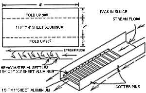

"Sluicing"-a gold mining technique that's been around since about the sixteenth century-can greatly increase the amount of gravel a panner can work.
The sluice principle is simple . . . yet effective: Rushing water carries gold-bearing material through a trough and over a series of riffles. These obstructions cause a vortex in the water flow . . . which allows heavier matter to settle to the bottom of the box while lighter material is washed away.
You can construct or buy sluices of varying degrees of complexity, but the small, oldfashioned variety made of wood or metal-which lies in the stream and uses the natural flow of water-is quite effective ... and can be built or purchased for less than $30. A wooden sluice, however, usually weighs at least 30 pounds when dry (and-of course-a lot more once it's waterlogged!). So, if you plan to prospect in remote areas, it's s advisable to build with 1/8" aluminu m sheet or buy a special unit made backpacking. (Ready-made pack-in sluices, priced from $19.95 to $34.95, can be ordered from Keene Engineering Dept. TMEN, 9330 Corbin Avenue, Northridge, California 91324.)
Ether way, there're several features one of these helpful devices should have if it's to achieve maximum efficiency, and give minimum difficulty. The sluices riffles, for instance, should be con- structed so their tops lean in the direction of the water's flow . . . to create the necessary vortex. And the little "obstacles" should be removable to allow for easy extraction of the trapped materials ... which will-you hope-contain gold.
You should also place a layer of out-door carpet under the riffles to aid in the entrapment of fine particles of "dust". This rug can be removed every few days and washed by hand in a clean tub of water to dislodge the golden flakes.
Once you've found "color" with your gold pan, set up your sluice so that there's approximately one inch of tilt per foot of length. (Too great an incline will only cause the water to gush out the low end and carry everything with it . . . including any particles of gold.) Dump the promising gravel into the upper end and allow the water to separate the heavy material. Then just remove the larger rocks and watch nature do your work for you!
|
 |
|
|